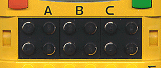
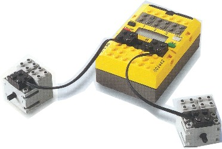

|
|
Start of Tutorial > Start of Trail |

The static Motor class is used to control actuators, i.e., devices connected to
one of the three black output ports mounted beneath the RCX's display:
Most of its methods are intented to be used with actual LEGO® motors, but may also be used in
connection with, say, a light bulb.

Not very surprisingly, the three ports are implemented as static fields of the Motor
class:
Motor.A.forward();
public static char getID(), which delivers 'A', 'B' or 'C'.
Note that the actual direction the motor is turning to depends on the way the connectors are mounted on the ports and the motors, resp. - so if your robot is running backwards when it shouldn't it may suffice to turn one of the connectors for 90°.
examples/rotator
section of the leJOS tree.
|
|
Start of Tutorial > Start of Trail |